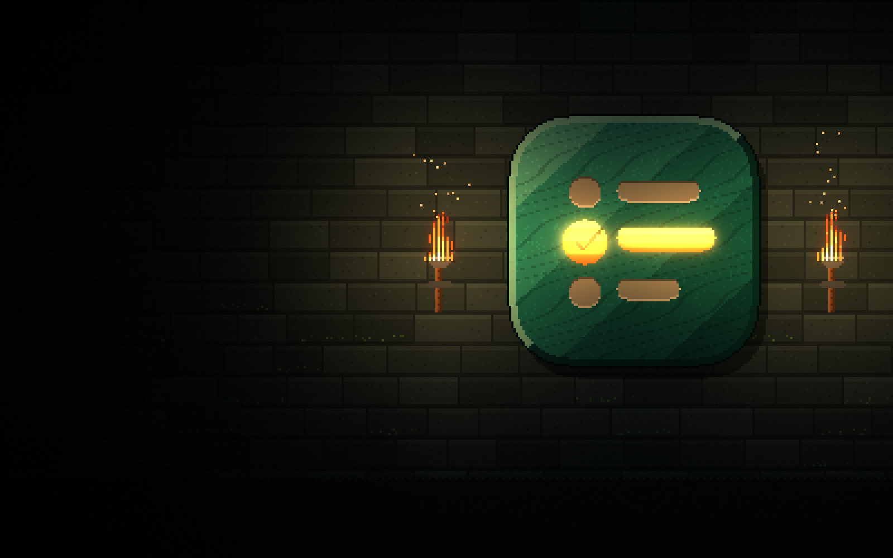
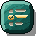

Verdete e creme na frente, grafite e ouro de apoio. Um único ponto dourado em cada símbolo: a alternativa certa.
O símbolo de hoje, desenhado de novo: três linhas de resposta e a certa em ouro, com o visto. Continuidade total.
O anel é o O de Orto; o visto dourado que corta a base o transforma no Q de Questões. Acertar fecha a letra.
Cinco lâminas, de A a E, abrindo de um ponto: um livro que abre, um dia que nasce. A do meio é a certa.
O anel B dentro de um selo com o nome em volta. Para certificados, ranking, conquistas e o perfil.
Mantém o que já é reconhecido e corrige o que pesa em tamanho pequeno: menos traços, a linha certa mais longa e o visto dentro do círculo.
Monograma de uma linha só. Em serifa, a marca ganha o peso de instituição; o visto dourado é a única cor quente.
Geométrico, com cara de marca de produto (à moda Eider): lê-se como livro aberto e como sol nascendo, sem nenhum osso desenhado.

O ladrilho como placa de pedra verde, com a alternativa certa em ouro aceso, sob a luz da fogueira. Para o site, o mascote e os posts.

32 px